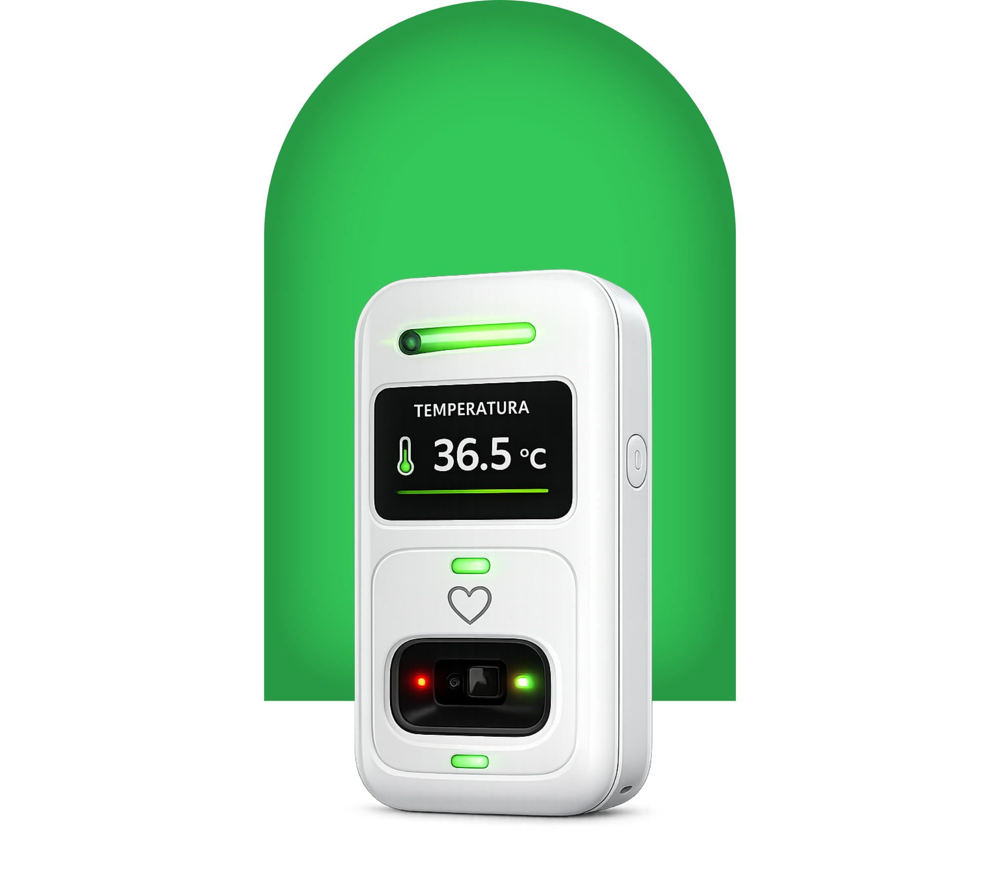

Porquê o PulseVita
Saúde sob controlo
sem complicações.
Medições rápidas
Resultados de temperatura e batimentos em poucos segundos, sempre que precisar.
Resultados em tempo real
Visualize a temperatura diretamente no ecrã integrado, sem precisar de outro aparelho.
Sistema de controlo
Ao adquirir o nosso produto, voce ira ter acesso a um sistema para controlar o dispositivo e marcar consultas medicas.
Simples como deve ser
Como funciona
em 3 passos
Tecnologia num so dispositivo
O que você precisa
num so lugar
poucos cliques

Descrição
O sensor da Pulse Vita é um dispositivo criado para ser pequeno, prático e fácil de transportar, permitindo levá-lo consigo para qualquer lugar.
Materiais
O dispositivo é construído com materiais leves, resistentes e confortáveis, pensados para garantir praticidade, segurança e durabilidade no uso diário.
Adquira o seu
Escolha o melhor
Escolha Pulse Vita

Garanta ja o seu !
Apos clicar em enviar, irá receber um email para continuar o processo de compra!
Perguntas frequentes
Ainda tem duvidas ?
Como funciona o sensor PulseVita?
O PulseVita combina um sensor ótico de batimentos e um sensor de temperatura. Coloca o dedo para medir os BPM e aproxima o dispositivo da testa para medir a temperatura. O resultado surge no ecrã e as luzes RGB indicam o estado.
O dispositivo é resistente à água?
O PulseVita possui resistência básica a salpicos, mas não deve ser submerso em água. Recomendamos mantê-lo afastado de líquidos para garantir a sua durabilidade.
Quanto tempo dura a bateria?
Com uso moderado, a bateria do PulseVita dura até 7 dias. O carregamento completo leva aproximadamente 90 minutos através do cabo USB-C incluído.
Os dados ficam guardados no dispositivo?
Sim, o PulseVita guarda o histórico das últimas medições localmente. Ao ligar à aplicação PulseVita, os dados são sincronizados automaticamente e ficam disponíveis no teu perfil.